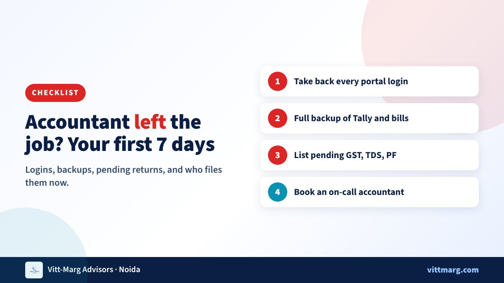

It happens in almost every small business: the accountant resigns, sometimes with a week's notice, sometimes with none. The 11th, 20th and 7th of the month still come. GST and TDS still have to be filed, and suppliers still need to be paid. This checklist helps you take control in the first week.

Day 1: take back every login
- GST portal, income tax and TRACES, EPFO and ESIC, MCA, and net banking.
- Change the passwords and move OTPs to the owner's mobile number and email.
- Tally or Zoho admin access, and the e-way bill and e-invoice portals.
Day 2: take a full backup
Copy the Tally data folder or export Zoho, plus all bills, statements and working Excel files, to a drive you control.
Day 3: list what is pending
| Check | Where |
|---|---|
| GSTR-1 and GSTR-3B filed for each month | GST portal, Return dashboard |
| TDS deposited by the 7th and returns filed each quarter | TRACES and income tax portal |
| PF and ESI paid by the 15th | EPFO and ESIC portals |
| Bank entries posted up to date | Tally against bank statement |
| Notices received | GST and income tax portals, the notices tab |
Days 4 to 7: keep the work moving
Do not let returns lapse while you hire; late fees and interest add up quickly. Book an accountant for a few hours to file what is due and bring the books up to date. With the Vitt-Marg On-Call Accountant you can get someone on a call the same week from anywhere in India, or at your office in Noida.
| Session | On a call (anywhere in India) | Office visit (Noida) |
|---|---|---|
| 1.5 hours | ₹899 | ₹1,499 |
| 2 hours | ₹1,099 | ₹1,799 |
| 3 hours | ₹1,499 | ₹2,399 |
GST is extra. Visit prices include travel inside Noida. You pay after we confirm the slot.
Then decide: hire or keep on-call
Many businesses find that two or three sessions a month cover everything. Compare the real cost in our note on full-time vs part-time accountants.
Free tools: check your tax with our income tax calculator (old vs new regime, FY 2026-27), and see every due date in the monthly compliance calendar.
Frequently asked questions
What should I do first when my accountant leaves?
Take back every login (GST, income tax, TRACES, EPFO, ESIC, MCA, net banking and Tally), change the passwords and move the OTPs to your own number.
How do I find out which returns are pending?
Check the GST return dashboard, TRACES for TDS, and the EPFO and ESIC portals, and compare Tally with the bank statement.
Can someone file my pending GST this week?
Yes. You can book the Vitt-Marg On-Call Accountant on a call from anywhere in India, or for an office visit in Noida, usually within one or two working days.
How Vitt-Marg helps
Book a qualified Vitt-Marg accountant by the hour: on a phone or video call from anywhere in India, or at your office in Noida. Tap the On-Call Accountant button at the bottom-right of this page to choose call or visit and the hours.
General information, current as of 22 November 2026, not advice for a specific case. Notifications and rules change often, so check with us before acting on it.